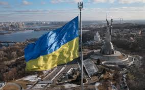
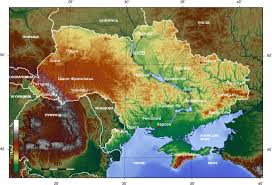
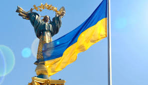

Україна — це держава в Східній Європі, яка вражає своєю історією, культурною спадщиною та природною красою. Вона межує з Польщею, Словаччиною, Угорщиною, Румунією, Молдовою, Білоруссю та Росією. Україна є однією з найбільших за площею країн Європи, поступаючись лише Росії.
Країна простягається від Карпатських гір на заході до степів на сході, від Полісся на півночі до Чорного й Азовського морів на півдні. Україна багата на річки, серед яких найважливіша — Дніпро. Також тут є родючі чорноземи, що забезпечують високий аграрний потенціал.
Історія України складна й багатогранна. Вона бере початок із Київської Русі — одного з наймогутніших середньовічних держав. Після падіння Русі українські землі входили до складу різних імперій, зокрема Польщі, Литви, Австро-Угорщини та Російської імперії.
У 1991 році, після розпаду Радянського Союзу, Україна здобула незалежність. Відтоді країна активно будує демократичну державу та зміцнює зв’язки з Європою.
Українська культура відзначається унікальністю й багатством. Народні пісні, вишиванки, писанки, традиційна кухня (борщ, вареники, сало) — все це важлива частина національної ідентичності. Державною мовою є українська, але також широко вживаються російська, кримськотатарська та інші мови нацменшин.
Сьогодні Україна проходить через складні виклики, зокрема пов’язані з війною, економічними реформами та інтеграцією до Європейського Союзу. Проте українці демонструють надзвичайну стійкість, гідність та бажання жити у вільній і справедливій країні.